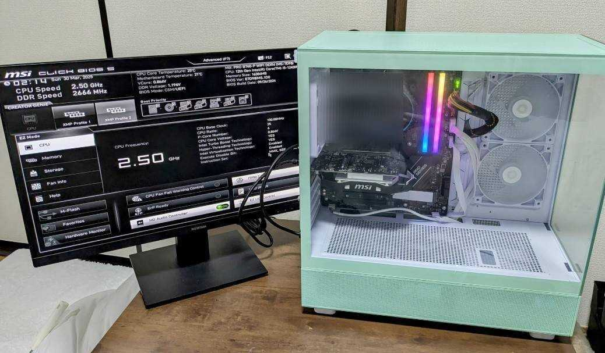

pcスペック
一部貰い物もありますが、コスパ重視で組みました
-
CPU intel corei5 12400F
インテルcorei5プロセッサーの第12世代(2022年)6コア12スレッド -
マザーボード PRO B760-P WIFI DDR4
ATX規格 -
メモリ ドスパラセレクト D4D3200-8G2A1-RGB-WH
DDR4規格、8GB×2、光る -
SSD ドスパラセレクト PG4-500GA1
M.2 2280規格 500GB -
SSD MSI SPATIUM M450 PCIe 4.0 NVMe
M.2 2280規格 500GB -
グラフィックボード MSI GeForce GTX 1050 Ti 4G OC
GDDR5 4GB -
電源 Platimax EPM500AWT
500W - ケース
- OS
- Ubuntu 22.04
- Windows11 Home
グラボと電源は貰い物で無料、合計¥56,260でした。
自宅のネット環境
賃貸設置の無料Wi-Fi